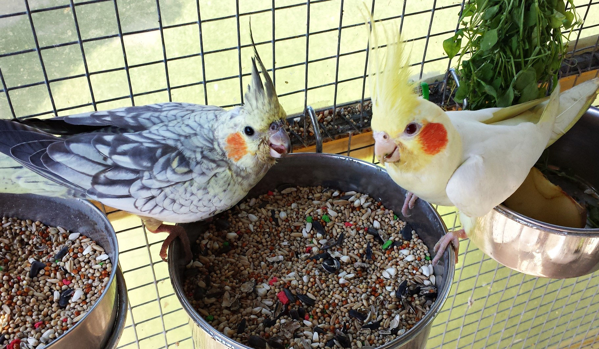

Las ninfas pueden comer un alimento específico para ellas o también una mixtura a base de avena, alpiste o pipas de girasol, al mismo tiempo les puedes proporcionar de vez en cuando algo de fruta, como manzanas y también verduras. También se le puede dar algunas golosinas como premio como frutos secos, barritas de semillas con miel. No le des chocolate, aguacate, alcohol, cebolla, champiñones, hojas de tomate, cafeína ni frijoles crudos, ya que son tóxicos. Los alimentos muy azucarados no son saludables para las ninfas. Procura mantener el agua limpia y fresca todos los días.
